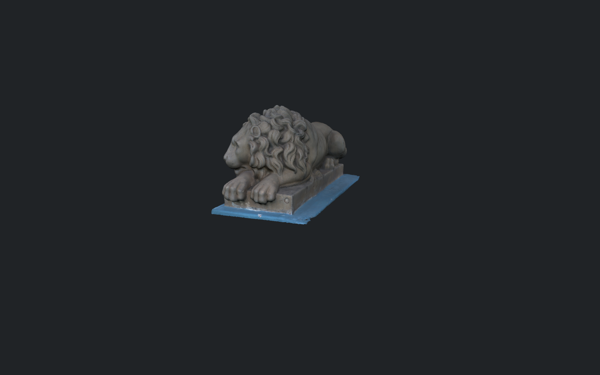
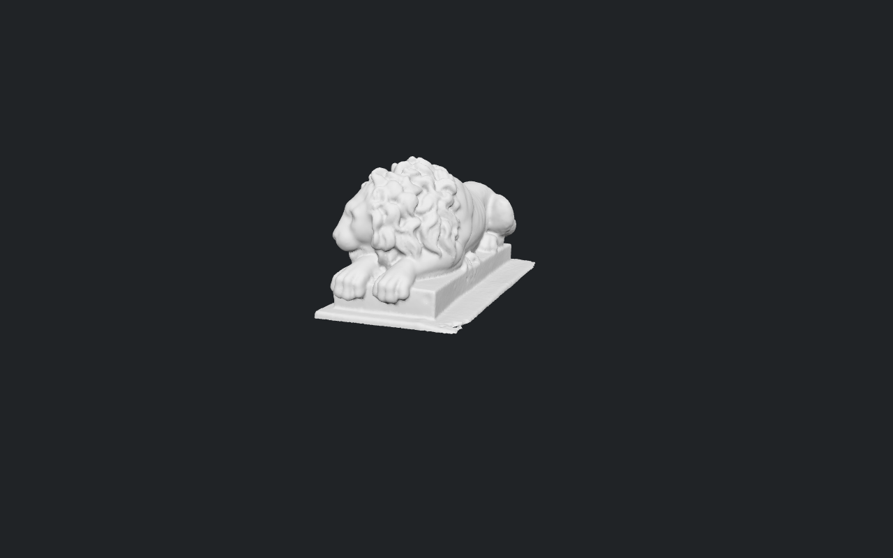
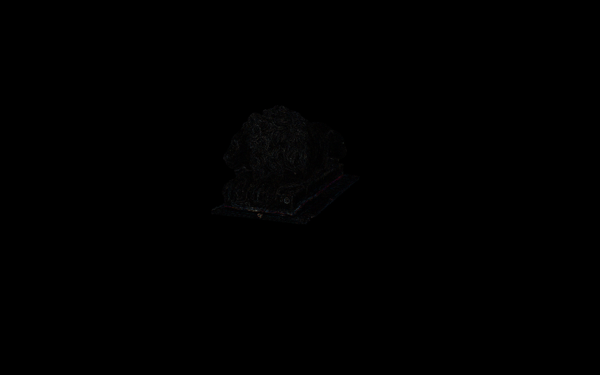
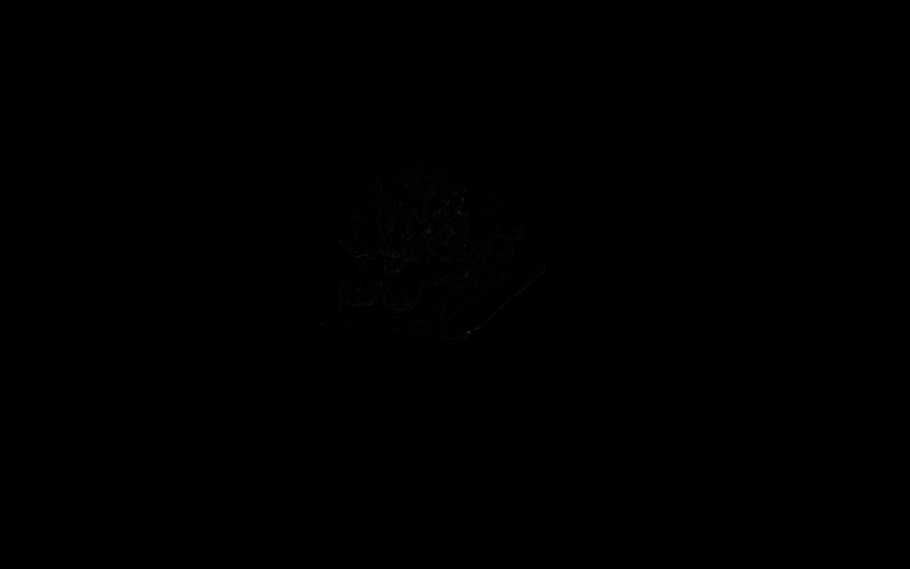
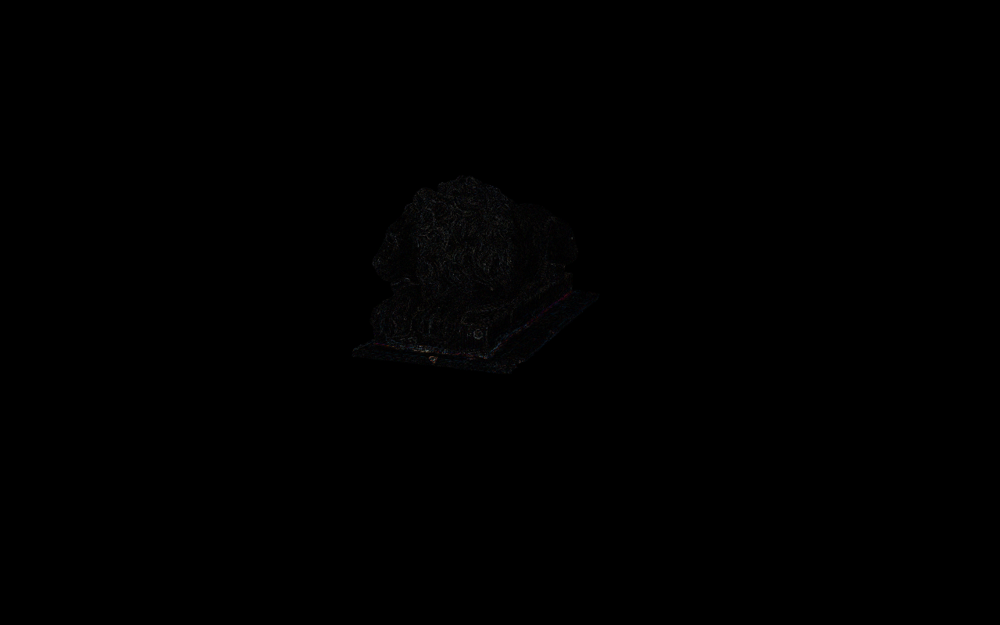

Nexus benchmark images
Measurements · JSON. Difference images amplify absolute channel differences by 4.
source-v0-t0-texturedsource-v0-t0-shaded
round1-v0-t0.1-textured
round1-v0-t0.1-shadedround2-v0-t0.1-textured round2-v0-t0.1-shaded
round2-v0-t0.1-shaded
round1-v0-t0.1-textured-vs-source-diff.png
round1-v0-t0.1-shaded-vs-source-diff.pnground2-v0-t0.1-textured-vs-round1-diff.png
round2-v0-t0.1-textured-vs-source-diff.pnground2-v0-t0.1-shaded-vs-round1-diff.png round2-v0-t0.1-shaded-vs-source-diff.png
round2-v0-t0.1-shaded-vs-source-diff.png